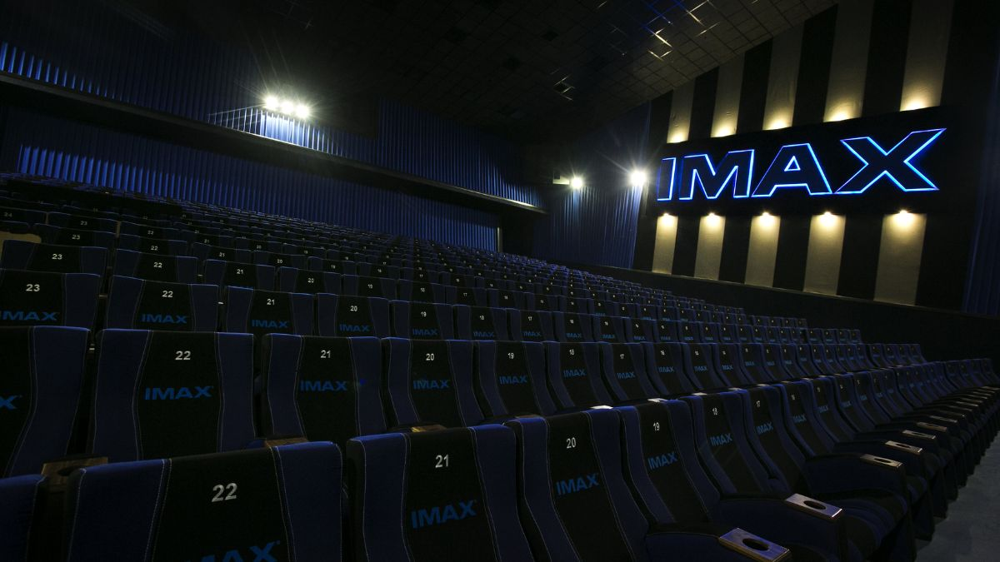
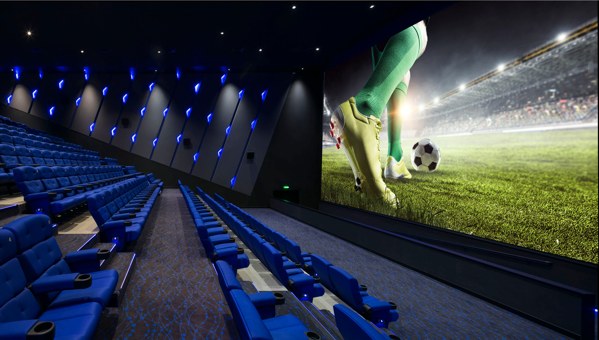
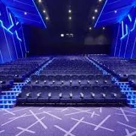
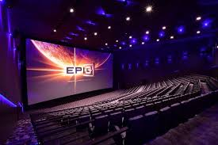
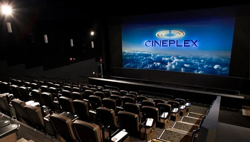

Gallery
Screening room gallery
A look at the S.I.C big-screen experience — screenings, crowds, and cinema atmosphere from past events at Ster-Kinekor.





Gallery
A look at the S.I.C big-screen experience — screenings, crowds, and cinema atmosphere from past events at Ster-Kinekor.




